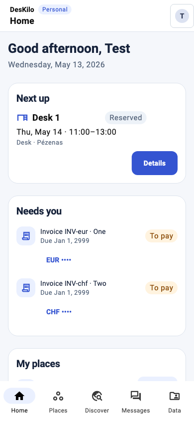

Home⌕⚙AL
My places
7 housesAdd a place
▲ Needs you: 2 invoices to pay — 30,00 EUROpen

Existing screen rendered from the tree with fixture data: the personal Home on a phone, greeting, “Next up” and “Needs you” with amounts masked as “EUR ••••”. Capture 22 (kept local) shows Me with tall business cards of different heights and an unlabelled round count badge; capture 30 shows My finances with four tiles and a two-row table that repeats them.